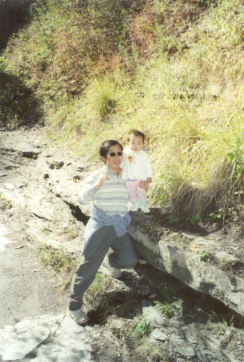

 Welcome to Recipes from Baba, my recipe archive site for my favorite childhood dishes from growing up with my Baba (Chinese for Dad).
Here you'll find archaic lists that could pass as recipes if you squint, truly representative of how my Dad, and most Chinese parents, tackle cooking. Give them a try if you dare, and feel free to be creative- these are designed as bases, for you to experiment and get creative with them!